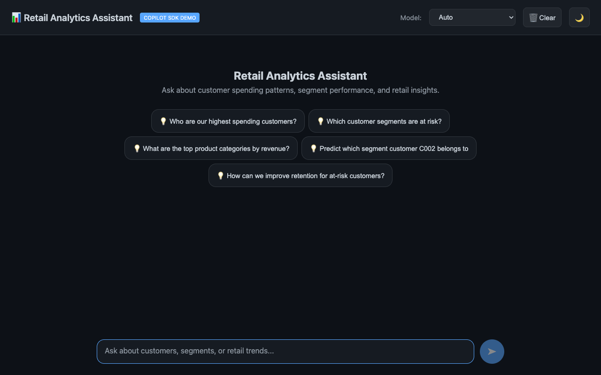

实验 01 — 环境设置¶
目标： 配置 Copilot SDK 开发环境，并使用 Agent HQ 演示应用作为运行 SDK 会话、流式传输和示例的载体。
时间： 约 15 分钟
先决条件¶
请参阅 实验 README。简而言之：.NET 10 SDK、已登录的 GitHub Copilot CLI，以及 curl 以及 jq.
步骤 1 — 克隆并检查¶
花点时间环顾四周：
此目录结构遵循 Microsoft Build 会话仓库惯例。.NET 实现位于 src/AgentOrchestrator/，其中包含两个项目及其测试。
⚠️ 仓库根目录没有方案文件。 其位置为
src/AgentOrchestrator/AgentHQDemo.slnx，因此构建与测试命令将明确指定它。若直接在根目录执行 dotnet build ，则从根目录执行将失败并显示 MSB1003.
步骤 2 — 还原并构建¶
dotnet restore src/AgentOrchestrator/AgentHQDemo.slnx
dotnet build src/AgentOrchestrator/AgentHQDemo.slnx
预期结果：
⚠️ 如果您遇到 MSB3923: Failed to download file ... registry.npmjs.org，表示您的网络封锁了 npm 包注册库。Copilot SDK 会在构建时下载匹配的 CLI 二进制文件。请改为全局安装 CLI，然后重新构建 —
Directory.Build.props 将检测并重复使用：
请参阅故障排除，了解完整的覆盖属性列表。
步骤 3 — 执行测试¶
预期结果：
记住这个数字。课程 05 实施时会要求您添加测试，且不能破坏这些测试。
步骤 4 — 启动 API¶
在第一个终端中：
首次运行时，系统会自动创建 SQLite 数据库并填充种子数据。您会先看到 EF Core 的 CREATE TABLE 和 INSERT 语句，随后看到：
步骤 5 — 启动 Blazor UI¶
在第二个终端中：
接着打开 http://localhost:5051。您应该会看到空白的聊天 UI：

⚠️ 端口已在使用中？ 先前执行的服务器可能仍在运行，并悄悄提供过期代码。请找到并停止它：
步骤 6 — 验证 REST API¶
在第三个终端中：
curl -s http://localhost:5050/api/chat/health | jq
curl -s http://localhost:5050/api/transactions | jq 'length'
curl -s http://localhost:5050/api/segments | jq '.[].name'
curl -s http://localhost:5050/api/segments/predict/C003 | jq
预期结果：健康状况报告 "status":"healthy"、10 笔交易、四个客户细分群体名称（高价值、常规、有风险、新客户），以及如下的预测：
{
"customerId": "C003",
"predictedSegment": "High Value",
"confidence": 0.89,
"topFeatures": ["high_total_spend", "multi_category", "total_1700"]
}
步骤 7 — 验证流式传输是否运行¶
这才是真正的测试 — 它能证明 Copilot SDK 已正确接线并完成验证：
curl -N -X POST http://localhost:5050/api/chat/stream \
-H "Content-Type: application/json" \
-d '{"prompt":"Reply with just the word OK","model":"claude-haiku-4.5"}'
预期结果 — 块逐步送达，最后以终止符结束：
⚠️ 如果您看到 data: {"error":"..."} 改为，表示 SDK 已连接到 CLI，但某个环节失败。常见原因有两个：
Model "..." is not available— 您的账户无法使用该模型标识符。请向API查询您实际可用的模型：curl -s http://localhost:5050/api/chat/models | jq '.[].id'- JSON-RPC 或反序列化错误 — 您的 SDK 与 CLI 版本已不一致。请执行
copilot --version并检查 故障排除.
步骤 8 — 验证 SDK 实验示例¶
后续每个 SDK 实验都会使用示例项目，因此请先构建一次，并确认可访问 CLI 入口点：
dotnet build src/AgentOrchestrator/samples/SdkLabs
dotnet run --project src/AgentOrchestrator/samples/SdkLabs
预期结果：构建成功，接着在不带参数执行时，会打印使用提示并列出五个示例命令：
这可以确认 SDK 已加载、项目可以执行，而且后续步骤可以使用实验命令。
步骤 9 — 试用 UI¶
回到浏览器中的 http://localhost:5051:
- 打开 模型 下拉菜单 — 内容会在运行时从您的账户加载，因此列表只会包含您确实可以使用的模型
- 提问： 「哪个客户细分群体的留存率最低？」
- 逐一观察令牌流入响应流
✅ 检查点¶
您现在应该具备：
- [x] 干净构建，26/26 项测试通过
- [x] API 位于 5050，UI 位于 5051
- [x] REST 端点会返回种子数据
- [x] 从真实模型获取实时流式响应
- [x] SDK 实验示例项目可成功构建并打印命令行提示
💡 加分练习¶
查询模型端点，并计算您的账户提供多少个模型：
请将其与以下位置的静态备用列表进行比较： ChatController.AvailableModels。实时列表才是正确数据来源 — 实验 02 会说明其重要性。